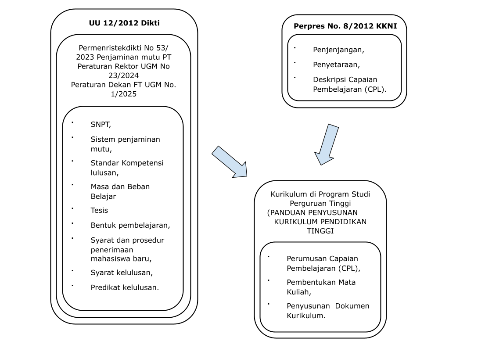
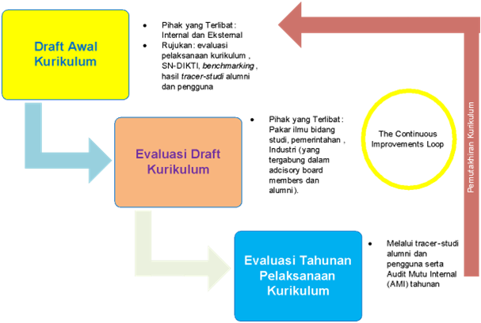
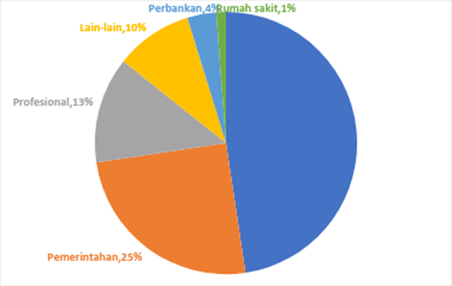
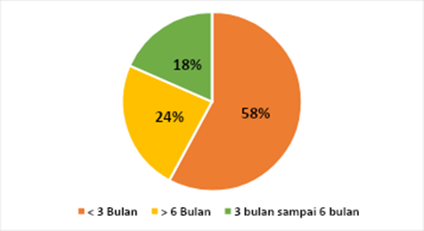
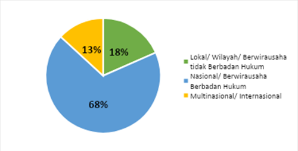
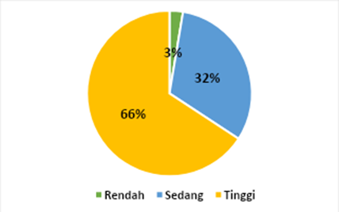
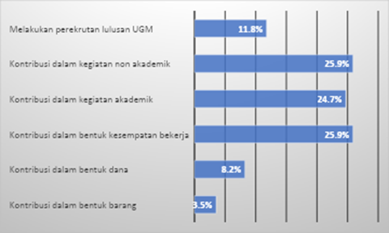
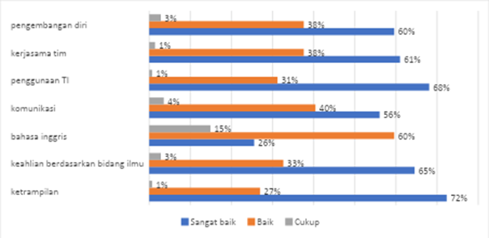

| Strengths | Weakness | |
|
|
|
| Opportunities | Strengths-Opportunities | Weakness-Opportunities |
|
|
|
| Threats | Strengths-Threats | Weakness-Threats |
|
|
|
1 Pendahuluan
1.1 Identitas Prodi
1.1.1 Perguruan Tinggi
Nama
Universitas Gadjah Mada
Visi
Sebagai pelopor perguruan tinggi nasional berkelas dunia yang unggul dan inovatif, mengabdi kepada kepentingan bangsa dan kemanusiaan, dijiwai nilai-nilai budaya bangsa berdasarkan Pancasila.
Misi
Melaksanakan pendidikan, penelitian, dan pengabdian kepada masyarakat serta pelestarian dan pengembangan ilmu yang unggul dan bermanfaat bagi masyarakat.
Tujuan
- Mewujudkan UGM sebagai lembaga nasional ilmu pengetahuan, kebudayaan, dan pendidikan tinggi yang menanamkan dan mengajarkan ilmu pengetahuan dan kebudayaan kepada Mahasiswa demi kelangsungan dan kehidupan manusia pada umumnya, demi perkembangan bangsa dan rakyat pada khususnya sebagai penjelmaan dan pelaksanaan Pancasila dan Undang-undang Dasar Negara Republik Indonesia Tahun 1945, serta demi tercapainya cita-cita Proklamasi Kemerdekaan sebagaimana ditentukan dalam Pembukaan Undang-undang Dasar Negara Republik Indonesia Tahun 1945;
- Membentuk manusia susila yang mempunyai keinsafan bertanggung jawab atas kesejahteraan Indonesia khususnya dan dunia umumnya, dalam arti berjiwa bangsa Indonesia, manusia budaya Indonesia, yang mempunyai dasar keinsafan hidup berketuhanan Yang Maha Esa, berperi kemanusiaan yang adil dan beradab, demokratis, diliputi oleh kenyataan dan kebenaran, cerdas, kreatif, terampil, mampu berkomunikasi dan berkesadaran lingkungan untuk melaksanakan tanggung jawabnya terhadap pembangunan, pemeliharaan dan pengembangan kebudayaan, hidup kemasyarakatan, serta masa depan bangsa dan negara Indonesia khususnya dan umat manusia pada umumnya.
1.1.2 Fakultas
Nama
Fakultas Teknik
Visi
Fakultas Teknik UGM menjadi lembaga pendidikan tinggi teknik berjejaring nasional dan global untuk penguatan peradaban baru, penguatan kemandirian dan kedaulatan bangsa di bidang IPTEK, dan perlambatan kenaikan entropi dunia, dalam rangka mengabdi kepada kepentingan bangsa dan kemanusiaan yang dijiwai oleh nilai-nilai budaya bangsa berdasarkan Pancasila
Misi
- Menyelenggarakan pendidikan untuk menghasilkan lulusan yang kompeten, berintegritas dan mampu menjadi pemimpin bangsa.
- Meningkatkan kegiatan penelitian dan pengabdian kepada masyarakat dalam rangka melestarikan, mengembangkan dan menghasilkan iptek yang berdampak pada kepentingan bangsa, kemanusiaan, peradaban dan perlambatan entropi dunia.
- Mengembangkan jejaring kerjasama multidisiplin dengan berbagai lembaga dalam dan luar negeri dalam rangka pengembangan tridarma perguruan tinggi.
- Meningkatkan tata kelola organisasi secara berkelanjutan yang berorientasi pada kepentingan manusia dalam konteks Society 5.0.
Tujuan
Menjadikan Fakultas Teknik UGM sebagai fakultas teknik terbaik di Indonesia dengan reputasi internasional melalui:
Pendidikan tinggi teknik yang berkualitas dalam rangka menghasilkan lulusan yang unggul dan kompeten;
Produk penelitian yang menjadi rujukan nasional yang berwawasan lingkungan dan responsif terhadap permasalahan masyarakat, bangsa, dan negara yang berbasis pada nilai-nilai keunggulan lokal;
Pengabdian kepada masyarakat yang mampu mendorong kemandirian dan kesejahteraan masyarakat secara berkelanjutan;
Tata kelola fakultas yang berkeadilan, transparan, partisipatif, akuntabel, dan terintegrasi antar bidang guna menunjang efektifitas dan efisiensi pemanfaatan sumber daya;
Kerjasama yang strategis, sinergis, dan berkelanjutan dengan para mitra.
1.1.3 Departemen
Nama
Departemen Teknik Elektro dan Teknologi Informasi
Visi
Departemen Teknik Elektro dan Teknologi Informasi menjadi sumber inovasi universal di bidang teknik elektro, informasi, dan biomedis untuk kepentingan bangsa dan kemanusiaan yang dijiwai nilai-nilai budaya bangsa berdasarkan Pancasila.
Misi
- Melaksanakan tridarma perguruan tinggi yang mampu menginternalisasi nilai-nilai DTETI (excellent, teamwork, harmony, optimistic, smart dan berintegritas: ETHOS for integrity) bagi kepentingan bangsa dan kemanusiaan.
- Mengembangkan lingkungan keilmuan yang mendorong tumbuhnya inovasi dalam pelaksanaan tridarma perguruan tinggi.
Tujuan
- Mewujudkan DTETI sebagai penyelenggara pendidikan di bidang teknik elektro, informasi, dan biomedis melalui program sarjana dan pascasarjana yang berkualitas, dalam rangka menghasilkan lulusan yang memiliki kompetensi tinggi, berkarakter dan berintegritas.
- Mengembangkan penelitian yang berkontribusi pada pengembangan keilmuan di bidang teknik elektro, informasi, dan biomedis untuk kepentingan bangsa Indonesia dan kemanusiaan secara universal.
- Menyelenggarakan pengabdian kepada masyarakat yang berkontribusi secara aktif dalam usaha penyelesaian berbagai masalah bangsa dan kemanusiaan secara universal melalui penyebaran dan penerapan produk-produk keilmuan di bidang teknik elektro, informasi, dan biomedis.
- Menjalin kerja sama yang strategis, sinergis, dan berkelanjutan dengan para mitra dalam rangka mendorong tumbuhnya keunggulan dan inovasi dalam pelaksanaan tridharma Perguruan Tinggi.
- Menegakkan tata pamong yang baik dalam penyelenggaraan tata kelola Departemen yang berkeadilan, transparan, partisipatif, akuntabel, dan terintegrasi antar bidang guna menunjang efektivitas dan efisiensi pemanfaatan sumber daya. Kerjasama yang strategis, sinergis, dan berkelanjutan dengan para mitra dalam rangka mendorong tumbuhnya keunggulan dan inovasi dalam pelaksanaan Tridharma.
Strategi Utama
- Penguatan orientasi keilmuan. DTETI akan berfokus pada pengembangan keilmuan berbasis keunggulan dan keunikan DTETI untuk peningkatan kemaslahatan masyarakat Indonesia dan Dunia melalui peningkatan kualitas pendidikan, penelitian, dan pengabdian kepada masyarakat (tri dharma) secara berkesinambungan.
- Penguatan kerjasama multiple-helix tingkat nasional dan internasional. Pengembangan jejaring mitra kerja sama strategis yang berkesinambungan untuk mendukung peningkatan kualitas tridharma.
- Penyelenggaraan tata pamong dan kelola yang lincah, fleksibel, tepat fungsi, dan tepat ukuran agar dapat secara cekatan, efektif, dan efisien menyesuaikan dengan tuntutan perubahan lingkungan. Tata pamong dan kelola yang baik akan meningkatkan kapasitas pengelolaan organisasi secara akuntabel, adil, transparan, efektif, dan efisien.
1.1.4 Program Studi
Nama
Program Magister Program Studi Teknologi Informasi
Visi
Menjadi sumber inovasi yang universal di bidang ilmu Teknologi Informasi untuk kepentingan bangsa dan kemanusiaan dijiwai nilai-nilai bangsa berdasarkan Pancasila.
Misi
Melaksanakan Tridharma Perguruan Tinggi untuk mencetak lulusan yang cakap dan berintegritas dan menghasilkan penelitian yang dapat dimanfaatkan bagi kepentingan bangsa dan kemanusiaan.
Tujuan
Menjadikan Program Magister Program Studi Teknologi Informasi (PMPSTI) sebagai sumber inovasi dan keunggulan dalam bidang ilmu Teknologi Informasi melalui:
Pengembangan pendidikan di bidang Teknologi Informasi yang berkualitas dalam rangka menghasilkan lulusan yang memiliki kompetensi tinggi, berkarakter, dan berintegritas,
Pengembangan penelitian yang berkontribusi pada pengembangan keilmuan bidang Teknologi Informasi untuk kepentingan bangsa Indonesia dan kemanusiaan secara universal,
Berkontribusi secara aktif dalam usaha penyelesaian masalah bangsa dan kemanusiaan secara universal melalui penyebaran dan penerapan produk-produk keilmuan dalam bidang Teknologi Informasi,
Pengembangan lingkungan akademik yang mendorong tumbuhnya keunggulan dan inovasi dalam pelaksanaan Tridharma Perguruan Tinggi.
1.1.5 Akreditasi
PMPSTI terakreditasi oleh BAN-PT dengan peringkat A untuk periode 22 Agustus 2017 sampai dengan 22 Agustus 2022. Kemudian mendapatkan akreditasi peringkat Unggul untuk periode 10 Mei 2022 sampai 5 Desember 2027.
- Jenjang Pendidikan
Jenjang pendidikan dari kurikulum ini adalah tingkat magister.
- Gelar Lulusan
Gelar lulusan yang akan diberikan adalah Master of Engineering (M.Eng.), sesuai dengan keputusan Rektor UGM nomor 292/P/SK/HT/2008 tentang gelar dan sebutan lulusan program pascasarjana (S2) Universitas Gadjah Mada.
- Profil Lulusan
Lulusan PMPSTI memiliki keahlian pada bidangnya dan cakap untuk melaksanakan penelitian dengan mengaplikasikan metode ilmiah untuk menyelesaikan masalah-masalah yang muncul sesuai dengan latar belakang keilmuan bidang teknologi informasi. Secara umum, lulusan PMPSTI dapat bekerja sebagai akademisi, peneliti, pegawai pemerintah, maupun profesional yang memiliki ciri kemampuan untuk analisis dan sintesis.
1.2 Latar Belakang
Kurikulum Program Magister Program Studi Teknologi Informasi (PMPSTI) 2022 Versi Revisi-2 merupakan pembaharuan kurikulum PMPSTI 2022 Versi Revisi-1 dengan mempertimbangkan perubahan peraturan Menteri dari Peraturan Menteri Pendidikan dan Kebudayaan No 53 tahun 2023 dan Peraturan Rektor No 23 tahun 2024 ke Peraturan Menteri Pendidikan Tinggi, Sains, dan Teknologi Republik Indonesia No. 39 Tahun 2025 tentang Penjaminan Mutu Pendidikan Tinggi. Sedangkan kurikulum sebelumnya, yaitu Kurikulum 2022 disusun sebagai tanggapan atas berbagai perubahan yang terjadi secara multidimensi baik pada sisi aturan, visi saintifik, serta berkembangnya kebutuhan pemangku kepentingan. Kerangka formal perubahan serta manifestasi realisasi kurikulum akan sangat kental berpegangan pada aspek aturan formal baik di tingkat nasional maupun di tingkat universitas. Sementara perubahan kondisi keilmuan hingga perubahan kebutuhan pemangku kepentingan akan menjadi landasan abstraktif yang memberikan panduan pada unsur realisasi struktural kurikulum.
Perlu disadari bahwa pendidikan adalah sebuah proses fisik yang memerlukan berbagai sumber daya nyata namun dilandasi oleh semangat yang bersifat sangat abstrak. Meskipun tidak nyata, namun semangat memberikan tuntunan yang hampir tanpa batas pada sisi keluasan dan kedalaman proses pendidikan. Untuk itu, aspek aturan akan menjadi panduan yang penting karena bersifat membatasi unsur maya dan menuntun pada realisasi kurikulum dengan memberikan kerangka yang dapat diisi secara konstruktif. Untuk itu, di awal penulisan kurikulum ini, beberapa aturan yang menjadi panduan utama penulisan kurikulum ini akan dijelaskan secara singkat.
Peta aturan yang menjadi rujukan perubahan kurikulum disajikan pada Gambar 1.1 Pendidikan magister adalah bagian dari proses pendidikan tinggi yang berlandaskan pada Undang-undang Republik Indonesia Nomor 12 Tahun 2012 tentang Pendidikan Tinggi. Posisi lulusan yang merupakan luaran pendidikan pascasarjana tingkat magister ini dipetakan posisinya dalam skup nasional dalam Peraturan Presiden Republik Indonesia Nomor 8 Tahun 2012 tentang Kerangka Kualifikasi Nasional Indonesia. Peraturan ini memandu dengan jelas arah pendidikan magister dengan menempatkannya pada level 8, dan memberikan deskripsi atas jenjang kualifikasinya.
Selain itu, dengan diterbitkannya Peraturan Menteri Pendidikan Tinggi, Sains, dan Teknologi Republik Indonesia No. 39 Tahun 2025 tentang Penjaminan Mutu Pendidikan Tinggi, Kurikulum Program Magister Program Studi Teknologi Informasi (PMPSTI) 2022 Versi Revisi-2 merupakan pembaharuan kurikulum PMPSTI 2022 Versi Revisi-1 dengan mempertimbangkan Peraturan Menteri Pendidikan Tinggi, Sains, dan Teknologi Republik Indonesia No. 39 Tahun 2025 tentang Penjaminan Mutu Pendidikan Tinggi dan Peraturan Rektor No 23 tahun 2024 mengakomodir perubahan jumlah SKS dari 54 SKS menjadi 36 SKS, bentuk Tesis yang dapat berupa tesis, prototipe, atau proyek, serta syarat lulus program pascasarjana. Lebih lanjut, Peraturan Rektor UGM No. 23 Tahun 2024 menetapkan pedoman terkait proses pembelajaran, termasuk panduan isi kurikulum, persyaratan kelulusan, dan kewajiban minimal publikasi. Peraturan Dekan Fakultas Teknik UGM No. 1 Tahun 2025 tentang Pendidikan Program Pascasarjana memberikan ketentuan tambahan yang mengatur secara spesifik pelaksanaan pendidikan di tingkat pascasarjana di lingkungan Fakultas Teknik UGM.

Realisasi dari KKNI pada tataran proses pendidikan memerlukan perumusan berbagai standar minimal yang harus terpenuhi sebagaimana diamanatkan oleh UU No. 12 tahun 2012 tentang Perguruan Tinggi pada Pasal 52 ayat 3. Standar ini tertuang dalam Standar Nasional Pendidikan Tinggi (SNPT) yang tertuang pada Permen Diktisaintek No. 39 Tahun 2025. Peraturan ini menggantikan SNPT sebelumnya. SNPT yang baru memberikan tekanan pada proses merdeka belajar dengan struktur yang tetap mirip dengan SNPT sebelumnya. Relasi berbagai aturan tersebut dapat dirangkum menjadi diagram seperti ditunjukkan pada Gambar 1.1 Peraturan-peraturan baru ini memerlukan penyesuaian pada kurikulum sebelumnya.
Selain aturan, perubahan kurikulum juga dipicu oleh perkembangan ilmu pengetahuan dan teknologi bidang Teknologi Informasi dan komunikasi (TIK), pemenuhan atas hasil tracer study, kebutuhan pengguna, serta dengan mempertimbangkan keberlanjutan program, yaitu sarjana, magister, dan doktor di Departemen Teknik Elektro dan Teknologi Informasi, Fakultas Teknik, Universitas Gadjah Mada. Karakter perkembangan ilmu teknologi informasi antara lain, dari sisi ranah aplikasi, ilmu teknologi informasi telah diterapkan secara luas hampir di semua bidang kebutuhan masyarakat, mulai dari komunikasi, transportasi, healthcare, perbankan, sosial, industri, pemerintahan dan keamanan. Penyatuan teknologi informasi dengan berbagai bidang ilmu lain telah melahirkan visi-visi baru yang cenderung melahirkan tatanan baru menggantikan tatanan lama (era disrupsi). Dunia barat, diwakili Jerman, cenderung mewadahinya dalam skema industri generasi 4 (i4.0). Sementara dunia timur, diwakili Jepang, menawarkan sudut pandang masyarakat generasi 5.0 (S5.0). Kedua tatanan ini adalah gabungan dari kesatuan energi-isyarat-informasi yang berinteraksi erat dengan berbagai bidang ilmu lain dalam kerangka tatanan sosial baru. Pandemi COVID19 turut membawa unsur pemaksa perubahan zaman. Perilaku manusia dan tatanan kehidupan sudah cukup tertantang dengan visi I4.0 dan S5.0 dan lebih ditantang lagi dengan pandemi. Perubahan zaman ini perlu disikapi dengan bijak pada struktur kurikulum baru ini.
Terdapat beberapa tahap yang dilakukan dalam pembaharuan kurikulum PMPSTI UGM, yang meliputi proses penyusunan draf kurikulum, evaluasi draf kurikulum sampai proses pemutakhiran kurikulum, seperti yang diperlihatkan pada Gambar 1.2 . Setelah draft kurikulum disusun kemudian dibahas dengan pihak internal maupun eksternal. Pihak eksternal meliputi pakar ilmu bidang studi, pemerintahan, dan industry yang tergabung di dalam dewan penasihat (advisory board) dan alumni. Tugas dari dewan penasihat di dalam pembahasan draft kurikulum adalah untuk membantu perumusan Profil Profesional Mandiri/Program Educational Objective bagi PMPSTI. Sedangkan alumni memiliki peran melalui tracer study sebagai rujukan bagi evaluasi kurikulum.

1.3 Landasan Perubahan dan Dokumen Rujukan
1.3.1 Landasan Filosofis
Pendidikan adalah kegiatan normatif-ideal yang meskipun bersifat individual namun pada dasarnya memberikan kontribusi pada masyarakat. Dalam kerangka ini, pendidikan perlu selaras dengan kondisi yang terjadi pada masyarakat sehingga kontribusi yang diberikan dunia pendidikan hendaknya bersifat positif bagi kemanusiaan.
Lingkungan yang dihadapi masyarakat modern dapat dibagi menjadi lingkungan yang dekat dengan individu dan lingkungan yang lebih luas. Secara global, teknologi digital sangat mendominasi pergerakan masyarakat. Komputasi digital telah mampu membuat model-model kompleks menjadi real-time. Sebagai akibatnya, muncullah dunia baru yang bersifat maya atau dikenal dengan nama metaverse. Dunia maya ini menjadi nyata juga akibat kemampuan komunikasi digital dengan kecepatan tinggi. Namun meski telah lengkap baik sarana-prasarana-perekayasa teknologi digitalnya, tanpa inovasi, tidak akan terwujud apapun. Ketiga aspek ini bergabung menyusun visi industrialisasi jilid empat atau dari sisi lain dinamakan visi masyarakat jilid lima. Visi global baru ini mengganggu tatanan lama pada tingkat lokal. Sehingga identitas setempat sangat mungkin terganggu. Pendidikan di PMPSTI sangat perlu untuk dapat menanggapi tantangan global namun harus tetap mampu menjaga tatanan lokal dalam kerangka nasionalisme. Aspek pendidikan ini merupakan visi pendidikan dari Ki Hadjar Dewantara yang dikenal dengan visi nasional-universal.
Secara khusus, berdasarkan Computing Curricula (The Joint Task Force for Computing Curricula, 2005), keilmuan teknologi informasi mendiskusikan bagaimana sebuah solusi komputasi dibangkitkan, didistribusikan, dikelola, dan juga disesuaikan dengan kebutuhan pengguna. Keilmuan teknologi informasi lebih melekat pada penerapan yang tidak melupakan aspek keteknikan. Dilihat dari level komputasi yang dibutuhkan (fondasi/dasar, teknologi, domain aktivitas) dan komponen yang menjadi fokus (domain hardware/software, dan kebutuhan organisasi), keilmuan komputasi terbagi menjadi ilmu komputer, teknologi informasi, keamanan siber, sistem informasi, rekayasa perangkat lunak, dan ilmu data. Komponen rekayasa informasi mencakup bidang seperti pembelajaran mesin, kecerdasan buatan, teori kontrol, pemrosesan sinyal, dan teori informasi, serta bidang yang lebih terapan seperti visi komputer, pemrosesan bahasa alami, bioinformatika, dan komputasi citra medis.
Pendidikan magister merupakan jenjang pendidikan termaktub dalam Kerangka Kualifikasi Nasional Indonesia (KKNI) pada level 8. Secara ilmu, lulusan program magister harus mampu menjalankan metode ilmiah secara mandiri sehingga memiliki pijakan filosofis-praksis yang berdasar kokoh dalam menyelesaikan masalah-masalah manusia dan kemanusiaan secara luas.
1.3.2 Landasan Sosiologis
PMPSTI bertekad menghasilkan lulusan yang mampu berkontribusi dalam menyelesaikan masalah yang terjadi dalam kehidupan manusia secara umum dengan memanfaatkan metode ilmiah dalam kerangka ilmu teknologi informasi yang dilandasi jiwa Pancasila. Tujuan ini selaras dengan visi DTETI. Dalam mewujudkan tujuan ini, mahasiswa akan ditempa melalui dua tahapan dasar:
Perkuliahan yang bersifat meluaskan cakrawala pandang dan memperdalam keilmuan,
Penelitian terbimbing.
Lingkungan yang mendukung tercapainya tujuan tersebut dibentuk dengan,
Kontribusi KBK sebagai pemegang otoritas keilmuan,
Pembentukan suasana akademik melalui pembiasaan kegiatan diskusi dan seminar tidak saja pada tingkat magister namun secara koordinatif mencakup mahasiswa doktor dan sarjana.
1.3.3 Landasan Psikologis
Dalam kurikulum ini, mahasiswa program magister dipandang sebagai pembelajar dewasa. Secara ideal, mahasiswa magister dianggap telah matang baik landasan ilmunya maupun pemikirannya. Dengan pemahaman ini, program magister dalam kurikulumnya akan memberikan dukungan dalam bentuk pembimbingan dengan pola asuh pamong agar setiap mahasiswa dapat meniti langkah mengikuti urutan nilai-nilai ajaran Ki Hadjar Dewantara, yaitu niteni-nirokke-nambahi (3N). Kurikulum akan menekankan fungsi sebagai fasilitator dan katalisator dengan dukungan fasilitas baik sarana maupun prasarana yang dapat mendukung suksesnya pendidikan magister bidang teknologi informasi.
1.3.4 Landasan Historis
Secara periodik, PMPSTI melakukan pembaruan terhadap kurikulumnya. Pada masing-masing periode, perbaikan terjadi untuk mengakomodasi poin signifikan tertentu. Kurikulum Program Magister Program Studi Teknologi Informasi (PMPSTI) pertama kali disusun pada tahun 2015 bersamaan dengan pengajuan Proposal Pendirian Prodi Magister Teknologi Informasi. Kurikulum 2015 diberlakukan sampai dengan tahun 2017 dan digantikan dengan Kurikulum Tahun 2017. Kurikulum 2017 disusun berdasarkan adanya penyesuaian dengan perkembangan teknologi informasi yang cukup pesat serta munculnya SK Rektor UGM No. 11 Tahun 2016 tentang Pendidikan Pasca Sarjana. Kurikulum 2017 tumbuh dengan memperhatikan sudut pandang baru yaitu outcome based education (OBE). Perwujudan dari sudut pandang baru tersebut muncul dari restrukturisasi mata kuliah yang lebih sederhana dan pernyataan eksplisit tentang program educational objective (PEO) serta program objective (PO). Kurikulum PMPSTI tahun 2017 juga fokus dilakukan pada pemenuhan unsur KKNI. Pendidikan magister diarahkan menjadi jenjang kualifikasi level 8 (delapan) dalam KKNI. Oleh karena itu, lulusan program PMPSTI didesain untuk:
Mampu mengambangkan pengetahuan dan teknologi di dalam bidang keilmuannya atau praktik profesionalnya melalui penelitian, hingga menghasilkan karya inovatif dan teruji,
Mampu memecahkan permasalahan ilmu pengetahuan dan teknologi di dalam bidang keilmuannya melalui pendekatan inter atau multidisipliner, dan
Mampu mengelola penelitian dan pengembangan yang bermanfaat bagi masyarakat dan keilmuannya serta mampu mendapatkan pengakuan nasional dan internasional.
Kurikulum 2022 melanjutkan perbaikan dengan memperhatikan aspek disrupsi tatanan yang terjadi akibat inovasi ilmu dan kondisi pandemi COVID19. Penyikapan yang muncul pada mata kuliah ini adalah dengan melakukan penyesuaian struktur mata kuliah dan potensi inovasi pembelajaran berbasis penelitian sebagaimana diisyaratkan dengan PR 18 tahun 2019.
Sedangkan Kurikulum Program Magister Program Studi Teknologi Informasi (PMPSTI) 2022 Versi Revisi-2 merupakan pembaharuan kurikulum PMPSTI 2022 dengan mempertimbangkan Peraturan Menteri Pendidikan Tinggi, Sains, dan Teknologi Republik Indonesia No. 39 Tahun 2025 tentang Penjaminan Mutu Pendidikan Tinggi;
1.3.5 Landasan Yuridis
Rujukan aturan yang mendasari kurikulum 2022 Versi Revisi-2 adalah:
Undang-undang No. 012 Tahun 2012 tentang Pendidikan Tinggi;
Peraturan Presiden No. 008 Tahun 2012 tentang Kerangka Kualifikasi Nasional Indonesia;
PP RI No. 67 Tahun 2013 tentang Statuta UGM;
Peraturan Menteri Pendidikan Tinggi, Sains, dan Teknologi Republik Indonesia No. 39 Tahun 2025 tentang Penjaminan Mutu Pendidikan Tinggi;
Peraturan Rektor UGM No. 23 Tahun 2024 tentang Pendidikan;
Peraturan Rektor UGM No. 14 Tahun 2020 tentang Kerangka Dasar Kurikulum;
Peraturan Dekan Fakultas Teknik UGM No. 1 Tahun 2025 tentang Pendidikan Program Pascasarjana.
1.4 Tracer Study dan Stakeholder Input
Dalam tahap pemutakhiran kurikulum, hasil study dengan responden alumni dan pengguna alumni merupakan rujukan yang penting. Hasil tracer study dapat memberikan evaluasi atas ketercapaian outcome pendidikan setelah 1-5 tahun pasca kelulusan. Departemen melalui tim tracer study melakukan survei terhadap alumni PMPSTI angkatan 2016 dan 2017 yang sudah melalui proses pendidikan di PMPSTI dengan sebagian besar atau keseluruhannya menggunakan kurikulum 2017. Analisis kegiatan tracer study di Program Magister Program Studi Teknologi Informasi DTETI FT UGM, menggunakan data dari 38 responden.
Salah satu hasil tracer study yang ditunjukkan pada Gambar 1.3 menunjukkan bahwa lulusan PMPSTI berkarir di dalam beberapa bidang. Fakta ini menjadi pertimbangan bagi tim kurikulum dan program studi dalam memperbarui profil lulusan PMPSTI.

Indeks Prestasi Kumulatif (IPK) merupakan salah satu indikator kesuksesan mahasiswa dalam menyelesaikan studinya dan juga faktor penting yang dipertimbangkan oleh pengguna alumni dalam menerima tenaga kerja. Semakin tinggi IPK lulusan, semakin besar pula peluang yang dimilikinya untuk memperoleh pekerjaan yang diinginkan atau melanjutkan ke jenjang yang lebih tinggi. Hasil tracer study memperlihatkan bahwa mayoritas alumni Program Magister Program Studi Teknologi Informasi lulus dengan Indeks Prestasi Kumulatif yang sangat baik dengan rerata IPK kelulusan berada pada rentang 3,26-3,50 skala 4. Namun, hasil tracer study juga menunjukkan bahwa responden paling banyak menempuh lama studi di Magister Teknologi Informasi DTETI FT UGM dalam rentang waktu antara 3 sampai 3,5 tahun yaitu sebanyak 26,3% responden.
Lama tunggu kerja yaitu seberapa lama lulusan dapat atau mulai memasuki dunia kerja sejak kelulusannya. Informasi terhadap masa tunggu tersebut bertujuan untuk mengetahui gambaran potensi serapan kerja alumni Program Magister Program Studi Teknologi Informasi dalam dunia kerja. Gambar 1.4 memperlihatkan hasil tracer study yang menunjukkan bahwa sebanyak 58% responden mendapat pekerjaan pertama kurang dari 3 bulan setelah lulus, 18% orang responden mendapat pekerjaan setelah lebih dari 6 bulan lulus dan 24% responden mendapatkan pekerjaan antara 3 bulan sampai 6 bulan setelah lulus.

Sedangkan, tingkat/ukuran tempat kerja responden yang ditampilkan pada Gambar 1.5 menunjukkan bahwa mayoritas berada di tingkat nasional dengan responden sebanyak 68%, sebanyak 19% orang responden bekerja di perusahaan di tingkat lokal atau wilayah dan terdapat 13% responden yang bekerja di perusahaan tingkat multinasional atau internasional.

Untuk tingkat kesesuaian antara topik mata kuliah yang diperoleh selama belajar di PMPSTI terhadap bidang pekerjaan, hasil tracer study menunjukkan bahwa tingkat kesesuaian topik mata kuliah terhadap bidang pekerjaan mayoritas responden adalah sesuai yaitu sebanyak 66% orang memilih kesesuaian dengan skala tinggi, 31% orang skala sedang dan ada 3% responden memilih skala rendah seperti ditampilkan pada Gambar 1.6.

Peran alumni bagi almamater merupakan salah satu hal yang penting dan harus selalu ditingkatkan. Gambar 1.7 memperlihatkan kesediaan alumni untuk berkontribusi dalam kegiatan akademik dan non akademik serta dalam bentuk kesempatan bekerja. Selain itu alumni juga bersedia memberikan kontribusi lainnya di bidang dalam bentuk barang atau dana, serta melakukan perekrutan lulusan UGM.

Dari sisi pengguna alumni PMPSTI, tracer study digunakan untuk menjaring evaluasi dari pengguna mengenai tingkat kemampuan/kompetensi alumni yang dibutuhkan dalam bidang pekerjaannya. Hasil studi terlihat pada Gambar 1.8. Secara umum, kemampuan alumni PMPSTI cukup baik, kecuali dalam hal kemampuan menggunakan Bahasa Inggris dan komunikasi.

Dalam diskusi bersama Advisory Boards DTETI, dibahas beberapa hal strategis untuk pengembangan program pendidikan. Pertama, terdapat masukan terkait perlunya perubahan pada Program Educational Objectives (PEO) DTETI agar lebih relevan dengan kebutuhan dunia kerja dan perkembangan teknologi saat ini. Selain itu, disampaikan pentingnya merumuskan dan menginternalisasikan “values” atau nilai-nilai yang menjadi ciri khas lulusan DTETI, sehingga mereka memiliki identitas profesional yang kuat. Diskusi juga menekankan pentingnya membudayakan aspek integritas dalam seluruh sistem pendidikan DTETI sebagai fondasi utama dalam membentuk karakter lulusan. Terakhir, disoroti pula kebutuhan untuk memperkuat kemampuan soft skills mahasiswa agar mereka mampu beradaptasi dan bersaing secara efektif dalam lingkungan kerja yang dinamis dan kolaboratif.
1.5 Analisis SWOT
Tabel 1.1 menunjukkan analisis SWOT atas kurikulum 2017 serta kondisi program studi/departemen secara umum. Melihat beberapa poin strength dan weakness yang ada maka PMPSTI menyusun strategi pengembangan dengan mempertahankan poin strength yang sudah tercapai dan memperbaiki weakness secara sistemis melalui perbaikan struktur kurikulumnya. Konsep Outcome-based Education (OBE) dan kesesuaian kurikulum dengan standar SNPT, KKNI, Visi UGM, Visi FT UGM, dan Visi DTETI tetap dipertahankan dan diselaraskan dengan Program Sarjana Teknologi Informasi. Di sisi lain, lemahnya ilmu dasar seperti statistika akan dijawab dengan penguatan materi tersebut di kurikulum 2022 Versi Revisi-2. Selain itu, untuk menjawab adanya Peraturan Rektor UGM no 18 tahun 2019, pada kurikulum PMPSTI 2022 Versi Revisi-2 ditambahkan jalur pendidikan magister berbasis riset. Pada aspek opportunity, melihat adanya peluang yang begitu besar terhadap kebutuhan lulusan di bidang teknologi informasi, maka kurikulum 2022 Versi Revisi-2 menyediakan empat konsentrasi untuk dipilih oleh setiap mahasiswa sesuai keminatannya. Keempat konsentrasi tersebut meliputi, konsentrasi smart-Government yang menjadi ciri dari PMPSTI FT UGM, konsentrasi analisis data dan kecerdasan tersebar (data analytic and pervasive intelligence), konsentrasi rekayasa perangkat lunak berpusat pada manusia (human centered software engineering), serta network and cybersecurity. Melalui konsentrasi ini diharapkan PMPSTI bisa menjawab kebutuhan lulusan di bidang teknologi informasi yang berkualifikasi sesuai tren kebutuhan di era Industri 4.0 antara lain Internet of Things, Big Data dan Artificial Intelligence (kecerdasan buatan) serta Society 5.0.
1.6 Tujuan Pengajuan Kurikulum
Kurikulum ini diajukan guna mengakomodasi berbagai perubahan yang terjadi atas diterbitkannya Peraturan Menteri Pendidikan Tinggi, Sains, dan Teknologi No 39 tahun 2025 dan Peraturan Rektor No 23 tahun 2024 dan Peraturan Dekan FT UGM No. 1/2025. Penyelarasan terjadi atas alasan filosofis, sosiologis, psikologis, historis, hingga yuridis. Dasar-dasar aturan yang digunakan untuk menyesuaian antara lain KKNI dan SN-Dikti. Poin-poin perbaikan juga dipandu oleh analisis strength-weakness-opportunity-threat (SWOT). Semuanya akan bermuara pada aspek administratif yang tertuang dalam struktur perkuliahan, detail silabus, dan luaran pembelajaran yang diharapkan.
Beberapa perbedaan pokok dengan Kurikulum 2022 Versi Revisi-2 adalah, a) penyesuaian jumlah SKS menjadi 36 SKS berdasarkan Peraturan Menteri Pendidikan Tinggi, Sains, dan Teknologi No 39 Tahun 2025 tentang Penjaminan Mutu Pendidikan Tinggi, b) penambahan mata kuliah wajib umum berdasarkan Peraturan Dekan Fakultas Teknik UGM No. 1 Tahun 2025 tentang Pendidikan Program Pascasarjana, c) menjaga kesinambungan Program Studi Sarjana Teknologi Informasi, FT, UGM, d) pengembangan Kurikulum Program Magister Program Studi Teknologi Informasi Berbasis Penelitian (PMPSTI-BR) berdasarkan Peraturan Rektor UGM No. 23 Tahun 2024 tentang Pendidikan.